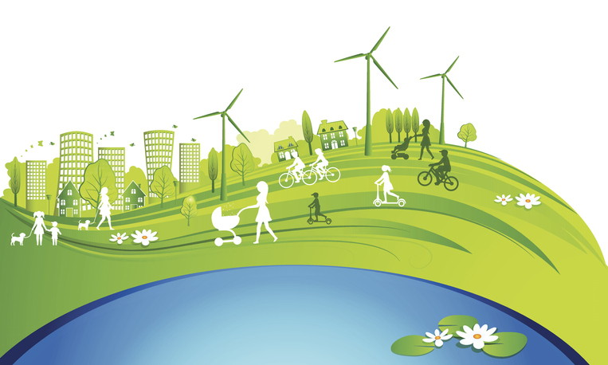

The Society for Practical Utopians
Working together to shape a brighter future for humanity
Calling for a US Sustainability Initiative
By Herb Bowie
2018 Dec 03
tags: society, sustainability

Looking back over the history of the United States, it’s easy to see in hindsight a series of events and actions that have either united or divided us.
The Revolutionary War, the ratification of our US Constitution, World War II and the race to put a man on the moon can all be seen as efforts that ultimately brought us together as a nation.
On the other hand, our Civil War and the Vietnam conflict are examples of actions that tragically divided us.
Of course, hindsight tends to emphasize outcomes and retrospective feelings, and understate periods of contention leading up to decisive action.
Looking back from today’s perspective, for example, we see WW II as a great triumph for America. Initially, though, our country was very reluctant to enter another European conflict and it took the Japanese attack on Pearl Harbor and persuasion from leaders in the form of media such as the Why We Fight series of films to rally our nation around the cause of stopping fascism.
Looking at our great nation today, of course, it is all too easy to see the divisions that run through our society. I don’t think I need to elaborate on them here.
Instead, I want to ask the question: is there a great common cause that can help bring us together today? And I ask this knowing in advance that no possible initiative will begin its life with universal acceptance, but that instead any such proposal will start out encountering a great deal of opposition.
When I look at possible candidates for some sort of great national enterprise that might bring us together in this way, I can think of only one that is likely to succeed: a National Sustainability Initiative.
Consider:
-
Sustainability is the greatest human challenge of our era. There are lots of facts and arguments to support this position, and many experts to endorse it.
-
As we Americans witness continually growing housing costs, overcrowded cities and roadways, crumbling infrastructure, climbing temperatures, increasingly destructive wildfires, rising sea levels, the negative impacts of fracking, the extinction of species, growing economic inequality, and increasing levels of pollution, the issue of sustainability becomes an everyday concern for most of us, rather than an academic debate.
-
The primary goals of the initiative could be strongly centered on national interests, with positive impacts that would be felt by most US citizens.
-
There could be many different threads to this initiative, with the opportunity to involve almost everyone in our society in one capacity or another.
-
Part of the initiative could be to maintain a sustainable US population size, thus providing a meaningful context for immigration policy.
-
Once we can achieve some agreement on a sustainable population size as a meaningful goal, we can regain broader support for family planning and birth control – which should help to bring down abortion rates as well as rates of unwanted pregnancies.
-
Investments in research & development and industrial capacity could help to foster a renewed sense of US leadership in science and technology and manufacturing.
-
Such an initiative would have a forward-looking focus, with the goal of building a better world for our children and generations to come.
-
Badly needed infrastructure development could be energized by a sustainability emphasis, providing the sense that we are not just fixing up the old stuff that is crumbling, but helping to build something new and better that will last longer.
-
Implementing something like a national Environmental Impact Tax could help to reduce environmental degradation, while at the same time providing a meaningful rationale for taxation.
-
Sustainability work could help provide more and better jobs for Americans.
-
Even with a primary focus on helping Americans, such an initiative would allow our country to regain a moral high ground and a renewed opportunity to exercise world leadership.
Gaining support for such an initiative would not be easy, and would need to be worked by a broad coalition including government, non-profits and for-profit companies.
So much of our attention these days seems to be mired in issues that we have been arguing about for decades – budget deficits, global trade, racial and gender discrimination, labor rights, environmental protection, gun violence, national parks and reserves, social security, military readiness, immigration, abortion – that we often seem overcome by the same sense of ennui and déjà vu that surely must be felt by hamsters going around on the wheels in their cages: we’re getting lots of exercise, but we don’t seem to be making much progress.
It is not that these issues aren’t important, or that they don’t deserve our attention: on the other hand, if we’re to make progress, and not just choose up sides and battle each other endlessly, it helps at times to adopt a new perspective, to place these old problems in a fresh context.
By now, if we’re not busy sticking our heads in the sand, I believe many of us realize that sustainability is the pressing context that we must focus on in order to ensure a livable future in this country, and on this planet, for ourselves and our children.
Perhaps this is why Rep.-elect Alexandria Ocasio-Cortez (D-N.Y.) is already proposing work on a Green New Deal.
I’m not sure I like the branding she’s using – “green” seems to be a divisive term associated with radicals and extremism, and “new deal” has connotations of social welfare. I’d rather see something suggestive of a technical project with a definite goal at the end of it – something more akin to the space race.
Or, to put it in terms of developmental levels, I’d like to see something framed to appeal more to red and orange levels (tribal/mythic and modern/rational) rather than strictly to the green level (postmodern/pluralistic).
But in any case I think this is a much-needed step in the right direction.
A sustainable future won’t happen by accident. It’s going to take all of us to make it a reality.
Tags
 Content at Practopians.org is Copyright © 2009 - 2018 by Herb Bowie except where otherwise noted
Content at Practopians.org is Copyright © 2009 - 2018 by Herb Bowie except where otherwise noted